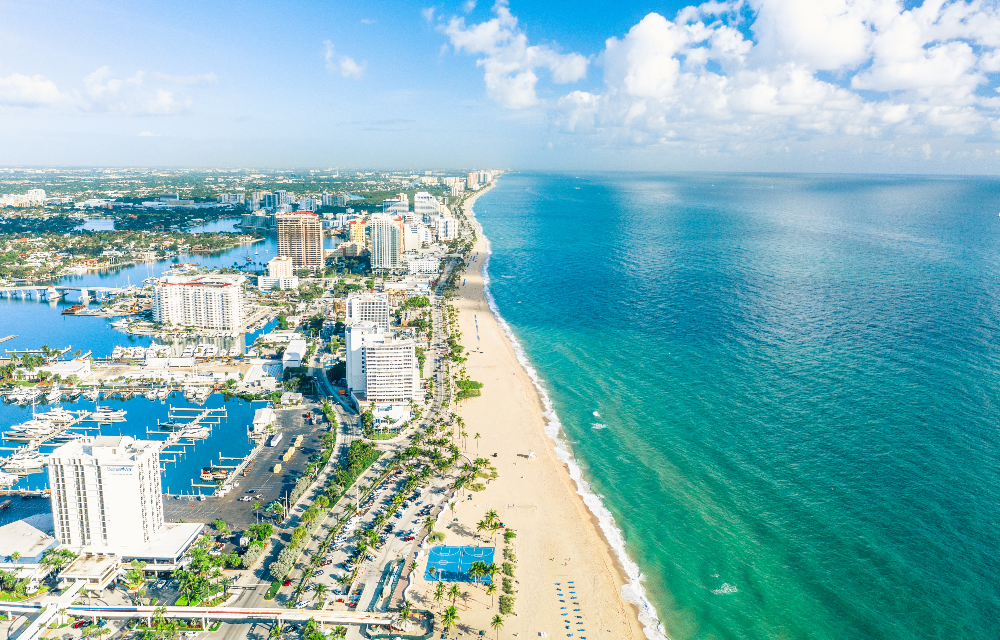

My name is Carly Tesnor and I'm passionate about web development. I was born in Haiti and currently studying at BYU-Idaho. I love creating beautiful and functional websites that make a difference. In my free time, I enjoy hiking, reading, and learning new programming languages.
About Me
Fort Lauderdale, United States

Located in the beautiful city of Fort Lauderdale. Our area is known for its beaches and pleasure canals. Its Strip is a promenade that borders the A1A road and the ocean. It is blessed with upscale outdoor restaurants, bars, boutiques and luxury hotels. also it just started to have a vibrant tech community. It's a perfect place for aspiring web developers to grow,learn and enjoy life.